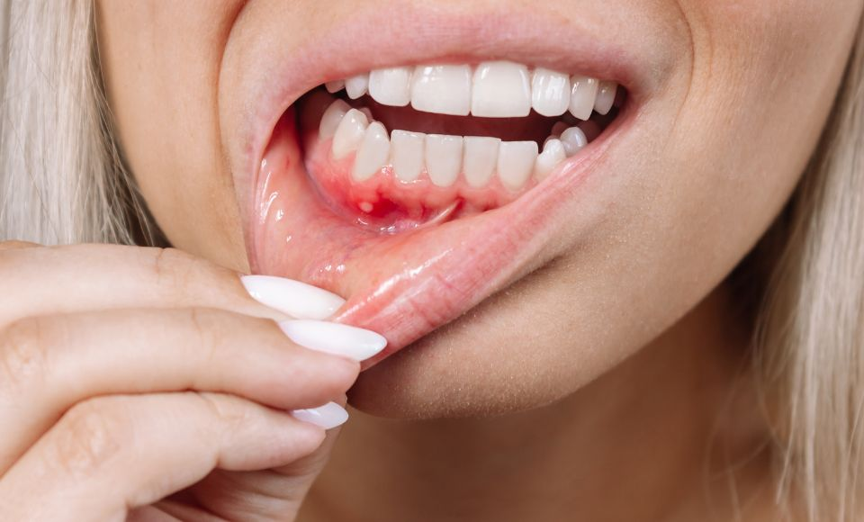

Зубные протезы должны быть не только эстетичными, но и функциональными, поэтому с развитием технологий имплантации зубные импланты остаются популярным выбором. Один из важнейших факторов долгосрочного успеха имплантов — их гармоничная интеграция с окружающими тканями. В некоторых случаях может потребоваться и удаление импланта. (На самом деле лишь чуть менее трёх процентов всех установленных зубных имплантов требуют замены или удаления в течение пяти лет.) К таким случаям относятся повреждение челюстной кости, серьёзные травмы, плохая гигиена полости рта или заболевания дёсен. Клиника Akdeniz Dental в Анталье проконсультирует вас по всем вопросам, связанным с зубными имплантами в Турции.
Можно ли удалить зубные импланты?
Да, зубные импланты можно удалить. Однако процедура удаления может быть довольно инвазивной, и в зависимости от состояния кости, в которую установлен имплант, могут потребоваться дополнительные хирургические вмешательства. При этом также необходимо учитывать состояние костной ткани вокруг импланта и здоровье окружающих тканей.
Когда нужно удалять зубной имплант? 4 случая

1. Травма
Прежде всего, повреждение челюстной кости может нарушить стабильность импланта, что, в свою очередь, отрицательно сказывается на его функции. Травма челюстной кости, особенно в результате серьёзных несчастных случаев, увеличивает нагрузку на имплант и приводит к его отторжению. В этом случае необходимо удалить зубной имплант и провести процедуры для восстановления челюстной кости.
2. Инфекция
Недостаточная гигиена полости рта — ещё одна важная причина неудачи имплантации. Хорошая гигиена сохраняет здоровье тканей вокруг импланта и предотвращает инфекции, такие как периимплантит. Если же гигиена недостаточна, вокруг импланта могут возникнуть воспаление и потеря кости. В этом случае потребуется удаление зубного импланта.
Перед началом любого эстетического или сложного лечения, например имплантации, состояние вашей полости рта, скорее всего, будет отличным. При заболевании дёсен симптомы обычно появляются поздно и разрушают ткани вокруг импланта, практически не оставляя иного выбора, кроме удаления зубного импланта.

Периимплантит — одна из самых частых причин удаления имплантов. При нём в тканях вокруг импланта возникает воспаление, которое со временем приводит к потере кости. Воспаление и потеря кости снижают стабильность импланта и в долгосрочной перспективе приводят к его утрате. При периимплантите требуется подробный план лечения, чтобы удалить имплант и вылечить инфекцию.
3. Расшатавшиеся зубные импланты
Со временем имплант может расшататься из-за отторжения организмом, неправильного заживления или низкой плотности кости. Такая подвижность может вызывать дискомфорт и потребовать удаления.
4. Аллергические реакции
Титан — высоко биосовместимый сплав. Однако, хотя и редко, у некоторых пациентов титан, используемый в зубных имплантах, вызывает аллергическую реакцию, и имплант может потребоваться удалить.
Как удаляют зубной имплант?
Удаление зубных имплантов требует хирургической процедуры, похожей на их установку, и обычно проводится под местной анестезией. Процедура начинается с небольшого разреза в области, где был установлен имплант.
Сложность операции напрямую зависит от того, насколько плотно ткани удерживают имплант в месте удаления. Если ткани довольно рыхлые, имплант обычно можно легко выкрутить с помощью имплантологического динамометрического ключа. Если же имплант сидит плотно, для его удаления может потребоваться более серьёзное вмешательство.
В качестве альтернативы имплант можно удалить костными щипцами. Эти инструменты позволяют эффективно извлечь имплант, щадя окружающие ткани.
В некоторых случаях для удаления импланта могут понадобиться специальные инструменты, например фреза Линдемана. Эту фрезу используют для аккуратного удаления костной ткани вокруг импланта, что облегчает его извлечение.
В последнее время для удаления имплантов применяют и лазерные технологии. Лазерные процедуры предлагают малоинвазивный подход и сводят к минимуму риск повреждения окружающих тканей.
Можно ли установить новый имплант после удаления?
После удаления зубного импланта возможность и успех повторной имплантации зависят от нескольких факторов.
Срок восстановления после удаления зубного импланта зависит прежде всего от степени костного дефекта и состояния окружающих тканей. При небольшом костном дефекте новый имплант можно установить сразу, но может потребоваться имплант большего диаметра. Однако при сильном воспалении или потере кости необходим период заживления, чтобы создать благоприятные условия для повторной имплантации.
Период заживления обычно длится от нескольких дней до нескольких недель и включает фазу формирования кости. За это время инфекцию берут под контроль, а костная ткань восстанавливается. Когда кость должным образом регенерирует, повторная имплантация может пройти успешно.
Подходящим кандидатам на повторную имплантацию необходимо пройти определённый период заживления, чтобы костная ткань достаточно восстановилась и стала стабильной. Также важно тщательно оценить причины удаления импланта и принять необходимые меры.
Что такое ранняя неудача имплантации?
Возможные причины ранней потери импланта:
Неполный контакт кости с имплантом: Остеоинтеграция — прочное сращение импланта с костью — основа успешной имплантации. Однако при недостаточно стабильной установке импланта между его поверхностью и костью может образоваться фиброзная рубцовая ткань. В этом случае имплант не может должным образом интегрироваться с костью, что может привести к его ранней потере.
Нарушение правил во время операции: Неправильное формирование ложа или неверное применение хирургических методик при имплантации могут привести к осложнениям, таким как повреждение твёрдых тканей или некроз кости. Это может нарушить остеоинтеграцию и привести к потере импланта.
Стерилизация и инфекция: Недостаточная стерилизация имплантов и хирургических инструментов может повысить риск инфекции. Инфекции могут нарушить контакт кости с имплантом и привести к его потере.
Отсутствие первичной стабильности: Если при установке импланта не обеспечена достаточная первичная стабильность, остеоинтеграция может не произойти, и имплант может быть утрачен.
Преждевременная нагрузка: Перегрузка импланта до того, как он достаточно сросся с костью, может нарушить остеоинтеграцию и привести к потере импланта.
Системные заболевания и воспаление: Некоторые системные заболевания или местное воспаление могут помешать успешному приживлению имплантов и вызвать их раннюю потерю.
Поэтому при лечении зубными имплантами важны тщательное планирование и проведение операции, соблюдение протоколов стерилизации и правильная установка имплантов. Если не учитывать эти факторы, возможна ранняя потеря импланта.
Что такое поздняя неудача имплантации?
К поздним причинам потери зубных имплантов можно отнести следующие:
Периимплантит: Инфекция тканей вокруг импланта — одна из самых частых причин его потери. Это состояние обычно вызвано бактериальной инфекцией, например инфекцией дёсен, и может привести к потере кости вокруг импланта.
Потеря кости: Убыль челюстной кости, в которую установлен имплант, может нарушить его стабильность и в долгосрочной перспективе привести к неудаче имплантации. Это может быть связано с тем, что имплант не интегрировался гармонично с костью, или с постепенной резорбцией костной ткани.
Периимплантная потеря кости: Постепенная убыль костной ткани вокруг импланта может снизить его стабильность и долговечность. Часто это связано с периимплантитом или другими биологическими факторами.
Ошибки при установке импланта: Причиной потери импланта могут стать хирургические или технические ошибки при его установке. Сюда относятся такие факторы, как неправильное положение импланта, недостаточная костная опора или неправильно прошедшая интеграция импланта.
Несовместимость: В зависимости от материалов импланта или лечения организм может отторгнуть имплант или дать реакции несовместимости. В этом случае потеря импланта может быть неизбежной.
Как понять, что зубной имплант не прижился?
Кратко перечислим симптомы неудачной имплантации:
- Боль и дискомфорт
Постоянная боль, дискомфорт или чувствительность в области зубного импланта могут быть первым признаком того, что имплант не зажил должным образом.
- Отёк вокруг зуба
Выраженный отёк может указывать на неудачу имплантации. Не следует игнорировать проблемы с дёснами, особенно такие симптомы, как кровоточивость, покраснение или рецессия десны.
- Промежутки между зубами
Появление промежутков между зубами вокруг зубного импланта может говорить о том, что имплант установлен неправильно или несовместим с окружающими тканями.
- Изменение цвета или потускнение
Изменение цвета или потускнение вокруг зуба может указывать на проблемы с имплантом.
- Трудности при еде
Трудности при приёме пищи могут говорить о том, что имплант не выполняет свою функцию.
- Воспаление дёсен
Признаки воспаления дёсен могут указывать на то, что имплант инфицирован или заживает неправильно.
Удаление зубных имплантов: частые вопросы
Больно ли удалять зубной имплант?
Нет! Удаление неудачного зубного импланта, как правило, безболезненно. Процедура проводится под местной анестезией и с седацией.
Можно ли снимать зубные импланты для чистки?
Установленные зубные импланты не снимают для чистки, поскольку они срастаются с окружающей челюстной костью. В этом нет необходимости.
Сколько стоит удаление зубного импланта?
Стоимость удаления зубного импланта зависит от ряда переменных. К ним относятся тип импланта, сложность хирургической процедуры, потребность в местной анестезии или седации и опыт стоматолога. В целом удаление импланта может быть более сложной, а значит, и более дорогой процедурой. Однако каждый случай индивидуален, поэтому назвать точную стоимость для конкретной ситуации сложно. Лучше всего обсудить стоимость удаления импланта непосредственно с нами.